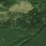
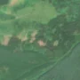

1,8 ha · Borsec, com. Corbu
văzută schimbată prima dată pe 1 mai 2026


Nu am găsit nicio autorizație de tăiere în jur.
Terenul: în afara amenajamentelor silvice publicate (pășune, mal de apă sau pădure privată fără amenajament în registru).
Ce se vede în poze: În poza detaliată, zona marcată era acoperită de pădure deasă de rășinoase. În poza «după» apar petice de pământ gol, deschise la culoare, în timp ce pădurea din jur rămâne verde, deci copacii au fost probabil tăiați.